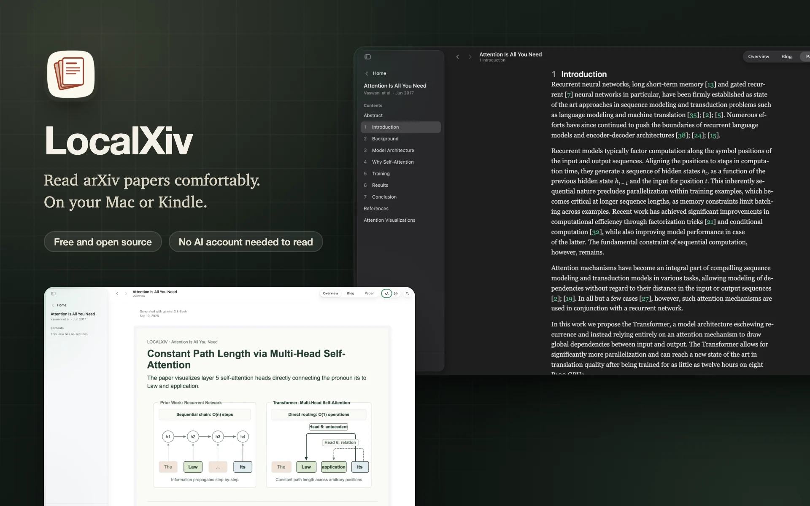
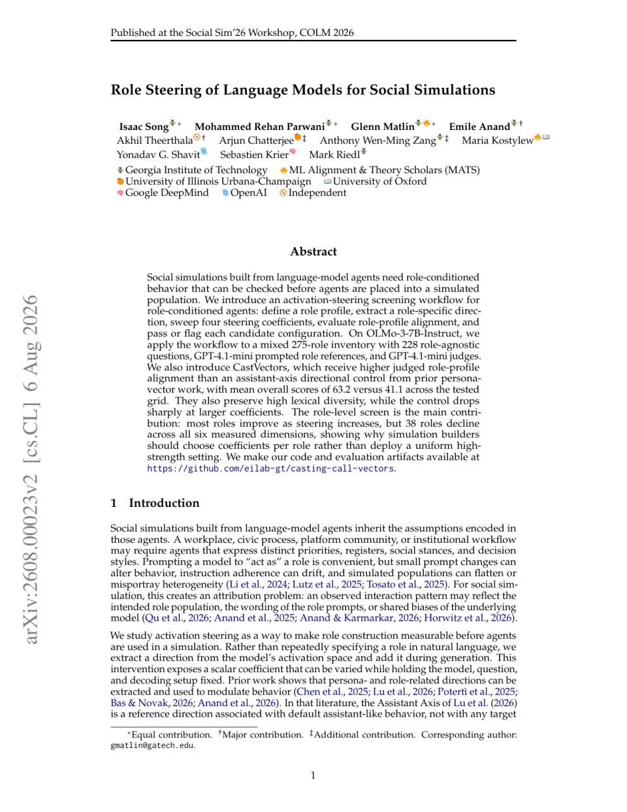
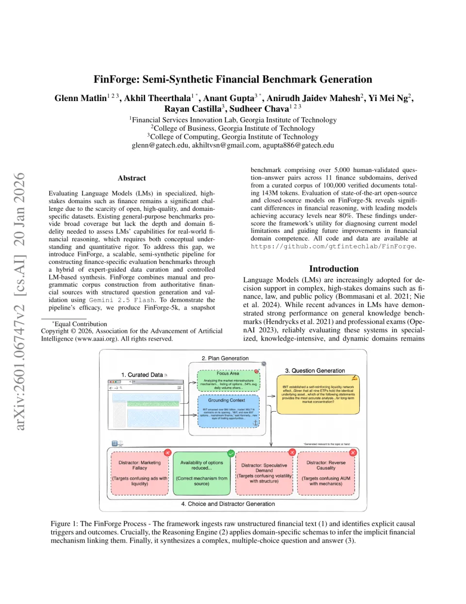

Open source · Mac app · Sep 2026
LocalXiv
A free, open-source Mac app for reading arXiv and alphaXiv papers, with a local library, adjustable layouts, optional AI explanations, and EPUB export for Kindle.
Applied data scientist · Perfios
I build AI that finance can rely on: calibrated LLM safeguards, document intelligence, and the data that trains them.

Open source · Mac app · Sep 2026
A free, open-source Mac app for reading arXiv and alphaXiv papers, with a local library, adjustable layouts, optional AI explanations, and EPUB export for Kindle.
Open source · Hugging Face · Jan 2026
Two synthetic spatial-reasoning training sets built from GQA images. One set has ten questions per image, and the other has one. I used them to fine-tune six Qwen3-VL models for a controlled comparison.
| category | query | response |
|---|---|---|
| Debt Management & Credit | Help! My friend's ex-wife might have stolen his identity—how do we fix his credit and tax mess?" So my friend has never had a credit card, loan, or… | I hear how overwhelming this must be for both of you—discovering identity theft, especially involving taxes and blocked credit access, is incredibly… |
| Investing & Wealth Building | My friend asked me why more people don’t invest in total stock market or S&P 500 index funds if they’re such a good long-term option, and I didn’t… | Your friend asks a really smart question—it’s great he’s thinking critically about this. Many people don’t use index funds despite their strong… |
| Retirement Planning | I’ve got about $100,000 sitting in a regular brokerage account, invested in mutual funds for a few years now. If I sold, I’d owe the usual 15%… | Your strategy is fundamentally sound, and your math on the 7% net tax savings (avoiding 22% income tax by redirecting salary into the 401k, while… |
Open source · Hugging Face · Sep 2025
Open personal-finance reasoning datasets and the LLMs I fine-tuned on them. The models give advice that accounts for a person's financial situation and psychological state.
| category | query | response |
|---|---|---|
| Personal | Is this a conflict of interests?? A support group for patients who suffer from the same diagnosis... sponsored by the maker of the medication they… | Here’s a coherent and empathetic response to your moral dilemma, structured to address your concerns while offering actionable solutions: --- Your… |
| Personal | How to deal with wanting something going against your own morals? Military. I want to join the Marines. I’m against the military industrial complex… | Here’s a thoughtful and structured response to your dilemma: --- Your conflict is deeply personal and understandable—it’s a tension between your… |
| Relationship Advice | Is a 17year relationship too long? So we met in H.S it’s been a very long time. It took me about a year to have any sexual contact, yes he has been… | It sounds like you’re grappling with an incredibly difficult and painful situation after 17 years of commitment. Your feelings of frustration,… |
Open source · AI ethics dataset · Apr 2025
A seed dataset of 567 moral dilemmas, analyzed from Morality-as-Cooperation, deontological, and utilitarian perspectives. It is a proof of concept that lists its limitations and needs further validation.
Engagement on a Facebook post
No text feature stands out: all 38, from topics and emotions to readability, score 0.02 or less.
Kickstarter campaign success
The notebook kept only campaigns its region map called North American, which left out Canada and nine US states. It then dropped the 80 campaigns that raised 10 times their goal or more, all of which had succeeded.
Research · B.Tech project · Mar 2024
My B.Tech research, which I extended after graduating, asked what drives engagement with crowdfunding posts on Facebook, and whether that engagement predicts a campaign's success. In the two models shown, the top feature can leak the outcome, and the text features were built with defects, so their low scores say little about text. A 2026 re-audit retired those methods, and I am rebuilding the study on archived Kickstarter pages.
May 2025 · Bespoke Labs, Hugging Face and Together.ai
I built synthetic data pipelines from real personal-finance questions and fine-tuned 8B and 14B models. I released the datasets, LoRA adapters, and quantized weights on Hugging Face. These releases have more than 56k downloads, counting community GGUF versions.
Perfios Software Solutions
For research and contributions to generative AI and financial document intelligence.
ATTRIB Workshop, NeurIPS 2026
Pretraining data curation decides what a model learns from, yet the properties that make a document worth learning from depend on what the model already knows. We argue that training-data attribution should steer pretraining. Influence-driven selectors already act on attribution to improve a run; we argue that the field should ask more of that attribution. A ranking of documents serves the run it was computed for, whereas a data property that explains a gain can be tested on new data and, where it holds, written into a curation criterion, including where familiar quality signals are known to diverge from measured usefulness. We specify a feedback loop that interprets attributed sources, tests the data changes they suggest, and folds the outcomes back into the next run and its curation criteria, and we state what evidence each step requires and what none of them establishes. Historical contribution, an understandable explanation, and future data value are distinct claims that require distinct evidence. We set out a research agenda for establishing when attribution improves curation decisions over existing methods at matched cost.

Social Simulations Workshop, COLM 2026Major contribution
An activation-steering screening workflow for role-conditioned language-model agents in social simulations. Across 275 roles, role-specific directions improve judged role-profile alignment over an assistant-axis control while preserving lexical diversity; 38 roles decline across every measured dimension, showing why steering strength should be selected per role rather than applied uniformly.

Agentic AI in Financial Services Workshop, AAAI 2026Major contribution
A scalable semi-synthetic pipeline for building finance-specific LM benchmarks from authoritative sources using expert-guided curation and controlled LM synthesis. FinForge-5k contains 5,000+ human-validated question-answer pairs across 11 finance subdomains and reveals substantial gaps in financial reasoning, even as leading models approach 80% accuracy.
Jan 2026 · 12 min read
A controlled study of data curation for fine-tuning vision-language models when domain images are scarce. It compares ten questions on each of 750 images with one question on each of 7,500.
Apr 2025 · 18 min read
How I chose a problem and built a personal-finance reasoning dataset. This work led to my first-place entry, out of more than 150 teams, in the Reasoning Dataset Creation Challenge.
Jan 2026 · 7 min read
How LazyInfer runs repeatable multi-stage LLM inference over JSONL records, with YAML configuration, retries, checkpoints, and schema validation.
International Institute of Information Technology, Hyderabad
Indian Institute of Technology, Kharagpur
Open to applied ML work, research collaborations, and fellowship conversations about reliable AI systems in finance and document intelligence.
akhiltvsn@gmail.comInterested in